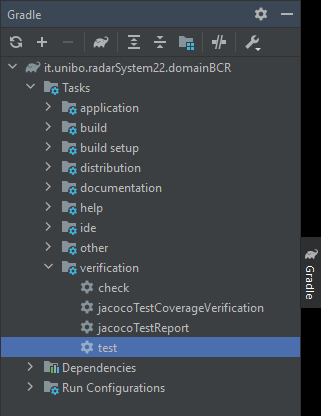

Test Plans
RadarSystem22.domainBCR
Mock Components Tests
| Test | Description | Expected Behaviour | File |
|---|---|---|---|
| Led | Test the Led mock functionalities. |
The Led should be ON when turned On,
should be OFF when turned Off and should be BLINKING
when made blinking. This component shows a GUI with the Led state (emulating the real device), and prints to console during the test. |
TestLed.java |
| Sonar | Test the Sonar mock functionalities. |
The values obtained by the simulated sonar should be
exactly the same as expected. This components prints the values on the console during the test. |
TestSonar.java |
| Buzzer | Test the Buzzer mock functionalities. |
The Buzzer should be ON when turned On,
should be OFF when turned Off and should be INTERMITTENT
when made Intermittent. This component emits a sound effect and prints to console during the test. |
TestBuzzer.java |
| TextDisplay | Test the TextDisplay mock functionalities. |
The TextDisplay should have the correct line updated
only according to the refresh rate specified in DomainSystemConfig. This component shows a GUI with 2 lines (emulating the real device), and prints to console during the test. |
TestTextDisplay.java |
Execute Test
To run all the radarSystem22.domainBCR tests:
./gradlew test
Or, if the Gradle version is not supported (legacy project):
- open the project in IntelliJ IDEA;
- open the Gradle view:
View > Tool Windows > Gradle; - run the test task: 